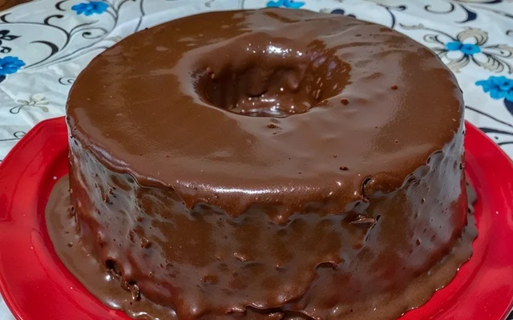

Receita Bolo de chocolate
Ingredientes
- 3 ovos
- 1 xícara de óleo
- 1 xícara de leite
- 2 xícaras de açúcar
- 1 xícara de chocolate em pó
- 2 e 1/2 xícaras de farinha de trigo
- 1 colher (sopa) de fermento em pó
Cobertura
- 1 lata de leite condensado
- 1 colher (sopa) de manteiga
- 4 colheres (sopa) de chocolate em pó
Modo de Preparo
- Bata os ovos, o óleo e o leite.
- Acrescente o açúcar e o chocolate em pó.
- Misture a farinha aos poucos.
- Por último, adicione o fermento.
- Coloque em forma untada e leve ao forno a 180°C por 35 a 40 minutos.

Volte para a Receitas